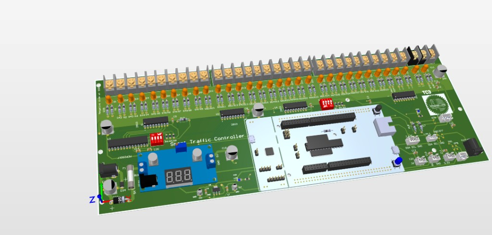
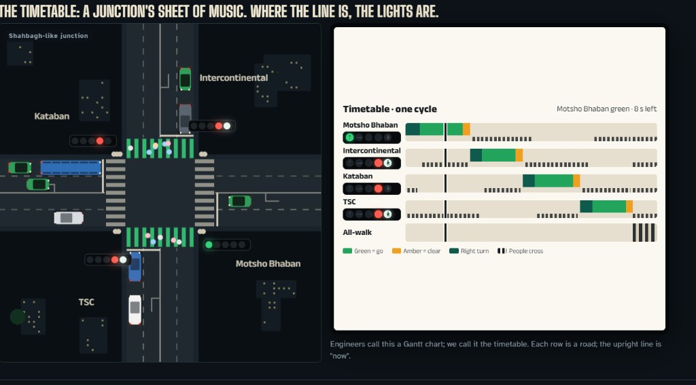

One site, four layers of work
Cameras count vehicles. The server writes a timing plan. The MCU only executes it. The PCB turns bits into 12 V lamps.
PCB — TC2 / TC3 carrier
Altium carrier under a Nucleo-144. The MCU module plugs in. Lamp power, expanders, sensors, and field headers live on our board.

What we designed
- Power: 12 V site supply, on-board 5 V / 3.3 V, TVS on sensor rails.
- MCU socket: Nucleo-144 Morpho (F429 footprint, F767 plugged in). JP3 = E5V.
- Lamp path: I2C1 → two MCP23017 → four ULN2803 → 32 relays. DIP sets 0x20 / 0x21.
- Sense: current clamp on PA3, humidity on PA0, spare ADC on PC0.
- Comms headers: SPI3, USART6, CAN logic (PD0/PD1) plus I2C. Status LED PE13.
Cameras are not on this PCB. Images stay on the site camera LAN; only the resulting plan arrives as MQTT.
STM firmware
CubeIDE project in firmware/. The chip is a cycle engine, not a vision box.
Boot, no PC needed
- Self-test relay 1 then 17.
- Compiled PLAN[]: A/B/C/D 20+3 s, ped 15 s, cycle 107 s.
- DHCP, print IP on UART 115200.
Once on the wire
- LwIP MQTT client
stm32-nucleo. - Ids
SHAHBAGHandSTM-LAB1. - Accepts JSON, TC1 68-byte, or HTML SET_PLAN 152-byte.
- Writes timings into PLAN[], ticks 1 s, bit-reverses for the PCB.
If the network dies
- 60 s without MQTT → morning / noon / night defaults.
- Clock from NTP (Dhaka +6) or MQTT
/time. - Heartbeat ~1 s for the GUI. Does not drive lamps.
PLAN[] → relays
| Signal | Relays R/G/A | Default start | Green | Yellow |
|---|---|---|---|---|
| road_a | 1 / 2 / 3 | 0 | 20 | 3 |
| road_b | 4 / 5 / 6 | 23 | 20 | 3 |
| road_c | 7 / 8 / 9 | 46 | 20 | 3 |
| road_d | 10 / 11 / 12 | 69 | 20 | 3 |
| left_lane | 13 / 14 / 15 | inverse of pedestrian | ||
| pedestrian | 16 / 17 | 92 | 15 | 0 |
| filters a–d | 18–21 | green 0 unless the server sets them | ||
Networking + operator GUI
Shahbagh-style junction: Motsho Bhaban, Intercontinental, Kataban, TSC, then all-walk. The timetable is one cycle — each row is a road, the playhead is “now.”

The tablet never talks to the MCU as a web server. Everything is HTTP to Go, then MQTT to the box.
Topics
| Topic | Dir | Job |
|---|---|---|
device/{id}/register | STM → | I exist |
device/{id}/request_plan | STM → | Send active plan |
device/{id}/plan | → STM | Timings / override |
device/{id}/time | → STM | Dhaka clock |
device/{id}/heartbeat | STM → | Phase for GUI |
device/{id}/plan_ack | STM → | Cycle + seq |
Why the MCU stays small
- GUI and cameras produce JSON.
- Go packs a 68-byte TC1 or 152-byte SET_PLAN frame + CRC.
- Lab broker typically
192.168.1.184:1883. - City scale: private routed fiber, 1883 not on the public internet. Cameras on their own VLAN.
Operator actions: resume, all-red, flash, timed hold. Same opcodes the tablet already sends.
Live: cameras set the plan
Move the sliders as if each camera just counted that approach. Push plan — greens scale with demand. Pedestrian stays fixed. This is the adaptive loop; the MCU only receives the new PLAN[].
Compiled cycle 107 s
| Signal | Start | Green | Yellow | Now |
|---|
Camera counts (vehicles in view)
Source: compiled default. Green = 8–40 s from share of counts. Yellow 3 s. Ped 15 s.